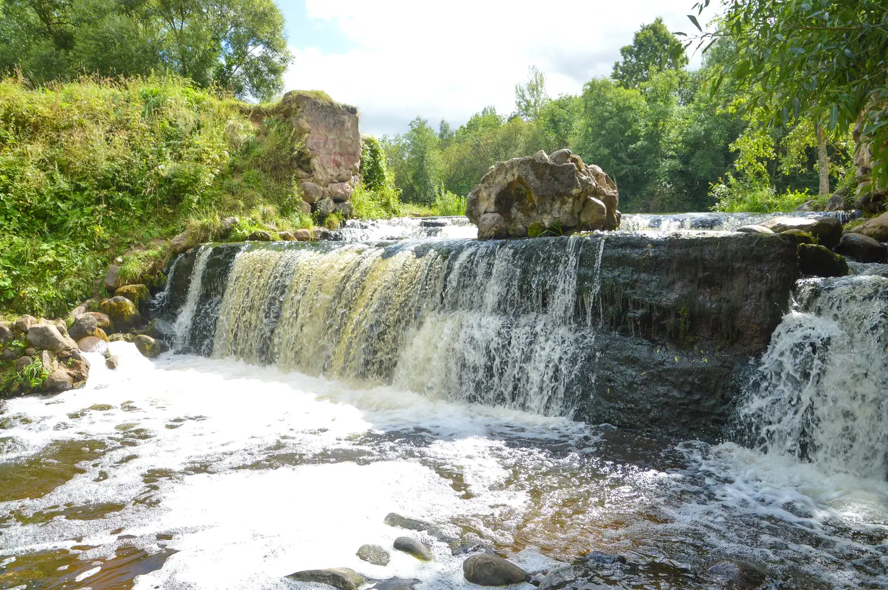
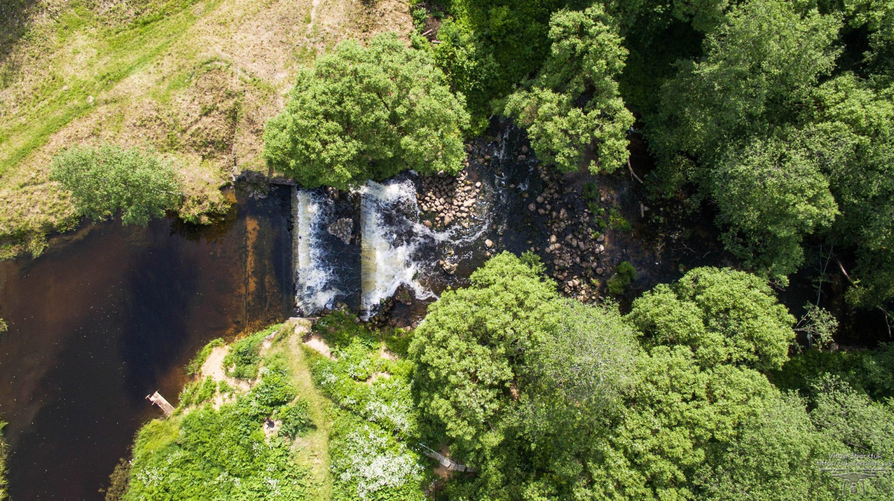

.
водопад на реке Вята

Успокаивающий шум воды, парящие в воздухе мелкие брызги и уединение.
Эмоции, которые дарят водопады, сложно сравнить тем, что испытываешь при
посещении других локаций. Согласитесь, уже само слово «водопад» будоражит
воображение. Удивить друзей и близких, пригласив их «сгонять к водопаду»,
можно и в Беларуси — вряд ли кто-то устоит. Все имеющиеся в наличии
перепады уровня рек в нашей стране рукотворные, но есть несколько мест,
которые определенно стоит посетить. Среди них выделяется водопад у деревни
Прудники в Миорском районе.

Найти миорский водопад, имея координаты для навигатора, весьма просто. Но
расстояния до крупных городов приличные и, как правило, посетителей здесь
немного. Вместе с тем, место становится все более известным и бывает, что
сюда добираются даже туристические группы. В прошлые годы можно было
встретить и туристов из соседних Литвы и Латвии, до которых рукой подать.